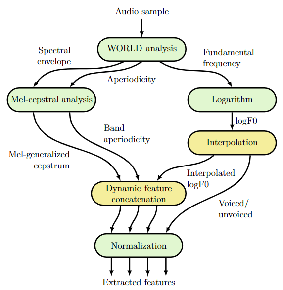
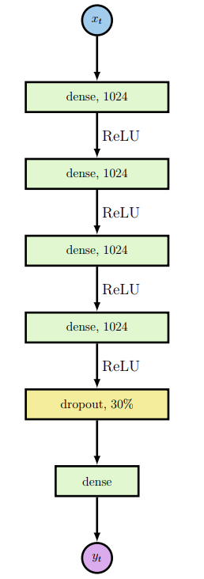
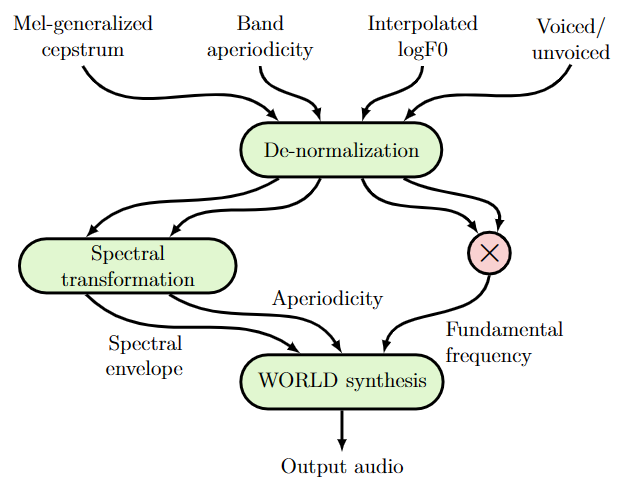

Cloud-based speech services are powerful practical tools but the privacy
of the speakers raises important legal concerns when exposed to the Internet.
We propose a deep neural network solution that removes personal characteristics
from human speech by converting it to the voice of a Text-to-Speech
(TTS) system before sending the utterance to the cloud. The network learns
to transcode sequences of vocoder parameters, delta and delta-delta features
of human speech to those of the TTS engine.
We evaluated several TTS
systems, vocoders and audio alignment techniques. We measured the per-
formance of our method by (i) comparing the result of speech recognition
on the de-identified utterances with the original texts, (ii) computing the
Mel-Cepstral Distortion of the aligned TTS and the transcoded sequences,
and (iii) questioning human participants in A-not-B, 2AFC and 6AFC (Alternative
Forced-Choice) tasks. Our approach achieves the level required by
diverse applications.
Task
Speech de-identification by transforming human speech into a generic Text-to-Speech (TTS) voice to protect speaker privacy.
Challenges
Removing personal speaker characteristics without losing linguistic content.
Ensuring irreversibility of transformation to guarantee privacy.
Preserving speech intelligibility and quality after transformation.
Limited availability of parallel speaker data for training traditional voice conversion systems.
Proposed Method
Train a deep neural network (DNN) to map vocoder parameters of human speech to those of a generic TTS engine voice using speech-text sample pairs.
Learn the many-to-one voice transformation at the vocoder feature level, including Mel-Cepstral Coefficients (MCEP), fundamental frequency (F0), and aperiodicity features.
Use Dynamic Time Warping (DTW) to align TTS outputs with original utterances for supervised learning.
Test several DNN architectures including Dense, ConvNet, C-BLSTM, ResNet, and Wav2Letter models.
Evaluate de-identification success via ASR accuracy drop, Mel-Cepstral Distortion (MCD), and human perceptual listening tests (A-not-B, 2AFC, 6AFC tasks).
Main Results
The method achieves strong de-identification with only minor degradation in automatic speech recognition accuracy (approx. 80-85% vs. 93% for aligned TTS baseline).
Mel-Cepstral Distortion values indicate comparable or better performance than baseline voice conversion methods, confirming quality retention.
Human listening tests show subjects are unable to reliably distinguish or identify speakers, confirming effective privacy protection.
The approach requires only speech-transcript pairs for training, making it practical for large-scale applications.
Limitations include inherited speech dynamics due to DTW alignment, suggesting future work to incorporate DTW in loss functions for improvement.
Visualization



Explore the network's transformations: original inputs on the left, modified results on the right.
BibTex
If you found our research helpful or influential please consider citing:
@article{fodor2021deidentification,
author = {Fodor, Ádám and Kopácsi, László and Milacski, Zoltán Ádám and Lőrincz, András},
title = {Speech De-identification with Deep Neural Networks},
journal = {Acta Cybernetica},
volume = {25},
number = {2},
pages = {257-269},
year = {2021},
DOI = {10.14232/actacyb.288282},
url = {https://cyber.bibl.u-szeged.hu/index.php/actcybern/article/view/4178}
}